付録A.参照要素と実要素の基本的な計算¶
 。
。 の境界の一部で、 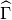 が参照要素 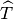 上の対応する境界であれば、
の境界の一部で、 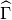 が参照要素 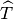 上の対応する境界であれば、 は 上の の法線です。同じように
は 上の の法線です。同じように は、 上の
は、 上の 二次微分計算¶
表記
行列と
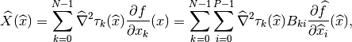
行列、そして
したがって
基本行列の計算のための一様な方法を持つために、Hesse行列はその成分が  である列ベクトル 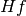 として計算されます。それから、 で
である列ベクトル 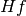 として計算されます。それから、 で  行列は次のように定義されます。
行列は次のように定義されます。
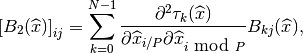
行列 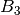 は次のように定義されています
は次を所持しています
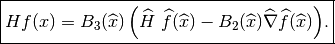
基本行列の例¶
基本的な “行列” を計算する必要があると仮定します。
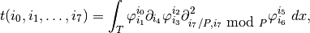
参照要素に対して行われる計算は、
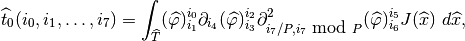
そして
これらの2つのテンソルは、ジオメトリ変換が線形の場合（ 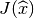 が一定であるため）、参照要素全体で一度計算できます。幾何変換が非線形である場合、格納されるべきものは各積分点の値です。実要素上の積分を計算するには、いくつかの低減が必要です。
最初の項 (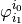) については何もしません。
2番目の項 (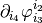) については、以下のように、行列
 を使って とします。
を使って とします。第3項（
 )` について 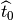 の縮約行列 をもつ 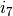 と行列:math:B_3 B_2 をもつ に関する の縮退を考えます
)` について 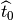 の縮約行列 をもつ 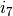 と行列:math:B_3 B_2 をもつ に関する の縮退を考えます
幾何学的変換が非線形である場合には、各積分点に対して低減を行います。これらの低減が行われると、それらの縮小の結果として生じるすべてのテンソルの加算が（幾何変換が非線形である場合、各積分点の負荷に等しい因子で）行われます。
有限要素が非  - 等価の場合、結果のテンソルを行列 で補助的に減らさなければなりません。
- 等価の場合、結果のテンソルを行列 で補助的に減らさなければなりません。

目次
前のトピックへ
スクリプト言語 (Python、Scilab、Matlab) とのインタフェース
次のトピックへ
Download
Main documentations
- GetFEM++ User documentation
- Python Interface
- Matlab Interface
- Scilab Interface
- Gmm++
- GetFEM++ project